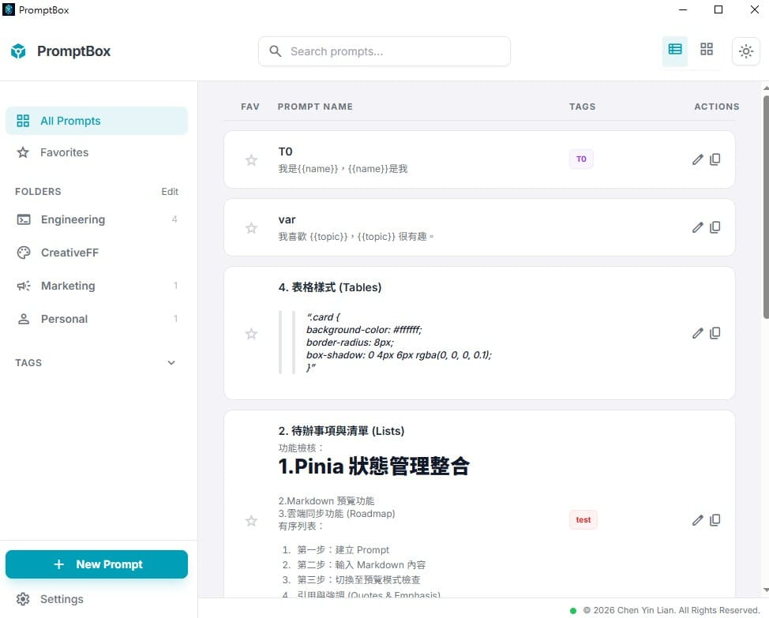
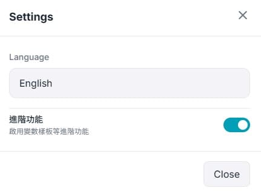
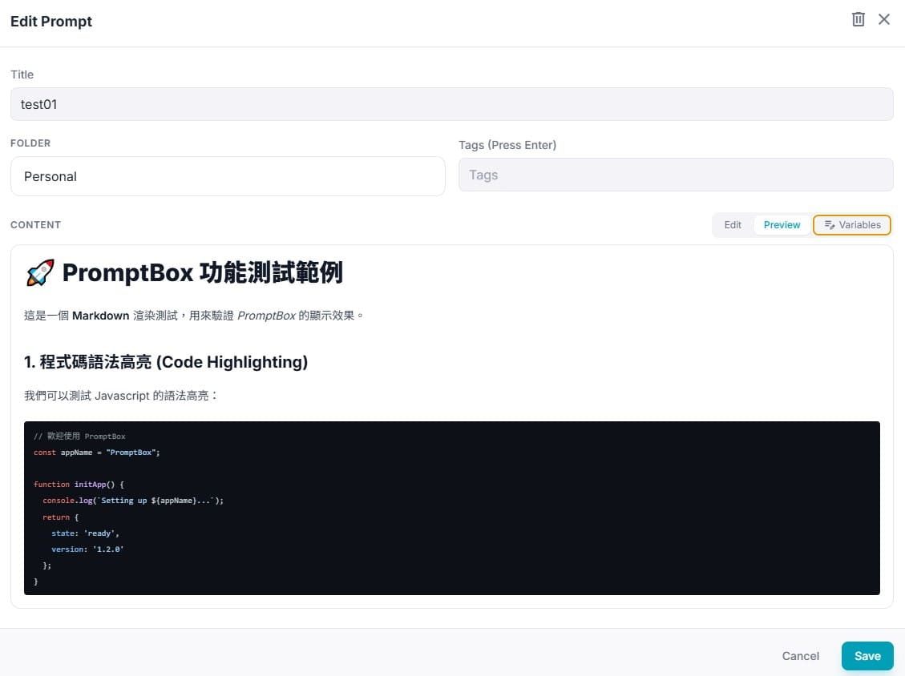
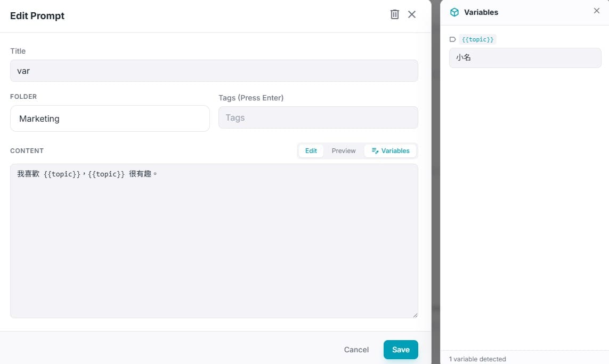

解放腦力，
你的專屬 AI 提示詞大腦
把常用 Prompt 分類收好、一鍵複製即用，讓 ChatGPT / Claude / Gemini 的使用效率翻倍。資料全存在你自己的電腦，加密保護、離線可用。

每天和 AI 對話的你，值得更好的工作流
重複輸入類似提示詞、翻聊天紀錄找上次的神 Prompt——這些時間都可以省下來。
告別決策疲勞
樹狀資料夾 + 標籤分類管理，Prompt 各就各位，不需每次重新思考怎麼下指令。
一鍵複製
從「選取、右鍵、複製」3 步驟縮減為 1 步驟，點一下即進剪貼簿，貼上就能用。
關鍵字直達
標題、內容、標籤全局搜尋。就算 Prompt 累積破百條，也能秒找到要的那一條。
無痛上手
內建教學資料夾與防呆機制，跟著範例卡片操作即可上手，不污染你的真實資料。
不只是收納盒，更是機密 Context 保險庫
v3 起，PromptBox 升級為「人類策展、AI 安全取用」的本地保險庫。
🎨 變數樣板，一份 Prompt 重複用
在內容中寫下 {{變數}}，複製前填入當次的值，同一份樣板適用不同情境；還能用 {{@prompt:N}} 把多張卡片串聯成組合技。
- check_circle動態變數替換，複製時自動代入
- check_circle卡片串聯遞迴展開，即時預覽結果
- check_circleMarkdown 預覽，長 Prompt 也好讀

🔐 機密卡片，AI 拿不走你的秘密
資料庫整庫靜態加密（SQLCipher + OS Keychain），機密卡片再加一層自訂密碼的 AES-256-GCM 卡片級加密——沒有你的授權，AI 永遠讀不到。
- check_circle卡片一鍵鎖定，對 AI 完全隱藏
- check_circle機密釋放需當次授權，解一次、餵一次、不快取
- check_circle每次釋放寫入稽核紀錄，全程可追溯

🔌 MCP 整合，IDE 直接取用你的 Prompt
內建 MCP 伺服器，Cursor、VS Code、Claude Desktop 等工具可直接把你的 Prompt 當作 Tool 呼叫，帶參數編譯回傳純淨字串，省 Token 又精準。
- check_circle每張卡片自動變成 MCP Tool
- check_circle具名多 Token 管理，可個別撤銷
- check_circleSystem Tray 常駐，關窗服務不中斷

不管你是誰，都有一套現成打法
rate_reviewCode Review 模版
固定的審查清單 Prompt，貼上 diff 就能產出一致水準的 review 意見，還可用 {{語言}} 變數切換技術棧。
build重構指令
「保持行為不變、拆出純函式、補測試」等重構口令收成一張卡，一鍵複製即開工。
science單元測試自動生成
把團隊的測試風格寫進樣板（框架、命名、AAA 結構），讓 AI 生出來的測試不用重改。
travel_exploreSEO 撰寫框架
關鍵字研究、標題公式、meta 描述等 SEO 流程 Prompt 全部收好，用 {{主題}} 換題目重複使用。
format_list_bulleted文章大綱生成
固定的大綱生成器：目標讀者、口吻、字數一次設好，每篇文章都從高品質骨架開始。
campaign多平台改寫
同一篇內容改寫成 FB / IG / 電子報版本的指令組，用卡片串聯一次輸出全通路文案。
description需求規格書轉換
把口頭需求、會議記錄餵給固定的 PRD 轉換 Prompt，輸出結構一致的規格文件。
design_services介面設計反饋
設計評論清單 Prompt（可用性、一致性、動線），貼上截圖就能獲得系統化 review。
groups利害關係人溝通
對工程、對老闆、對客戶的三種說法樣板，同一件事快速產出三種版本的溝通稿。
你的 Prompt，只屬於你
PromptBox 是本地優先（local-first）工具。資料預設留在這台電腦，沒有你的當次授權，機密永遠不會外送。
你的電腦
所有 Prompt 存在本機加密資料庫，離線也能用。
AI 工具
只有你複製或釋放的那份內容，才會進到 ChatGPT / Claude。
我們的伺服器
沒有雲端帳號、不上傳、不追蹤。我們收不到你的資料。
雙層加密
整庫 SQLCipher 靜態加密，機密卡片再加一層 AES-256-GCM，金鑰交由 OS Keychain（Windows DPAPI / macOS Keychain）保管。
當次授權釋放
機密卡片對 AI 完全隱藏，需要用時解一次、餵一次、不快取，每次釋放都寫入稽核紀錄，全程可追溯。
更新由你決定
v3 起採手動更新，偵測到新版只會提示、不會無聲自動安裝，你的資料始終由你掌控。
還在猶豫？先看這幾題
我的 Prompt 會被上傳到雲端嗎？
不會。PromptBox 沒有雲端帳號機制，所有資料存在你本機的加密資料庫，離線也能完整使用。只有你主動複製或釋放的內容，才會進到你自己開的 AI 對話視窗。
真的免費嗎？有什麼限制？
核心工作流永久免費：Prompt 管理、資料夾分類、標籤、全局搜尋、一鍵複製、Markdown 預覽、深淺色主題都不用錢（免費版上限 30 條 Prompt、5 個資料夾）。需要無上限與變數樣板等進階功能，再一次性 $9.99 USD 買斷即可，沒有訂閱。
機密卡片安全嗎？AI 會讀到嗎？
機密卡片預設對 AI 完全隱藏，並以獨立密碼做卡片級 AES-256-GCM 加密。沒有你的當次授權，AI 讀不到；每次釋放都會寫入稽核紀錄，可事後追溯。
安裝安全嗎？資料會不會弄丟？
安裝檔全數發布於官方 GitHub Releases，來源公開可查。首次啟動會自動建立加密資料庫並載入「教學資料夾」，讓你在不影響真實資料的前提下先熟悉操作。
支援哪些平台？
目前支援 Windows 10 / 11 與 macOS 10.15（Catalina）以上。Windows 另提供免安裝便攜版，解壓即用。